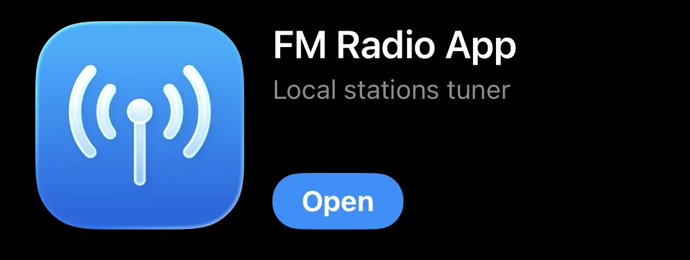
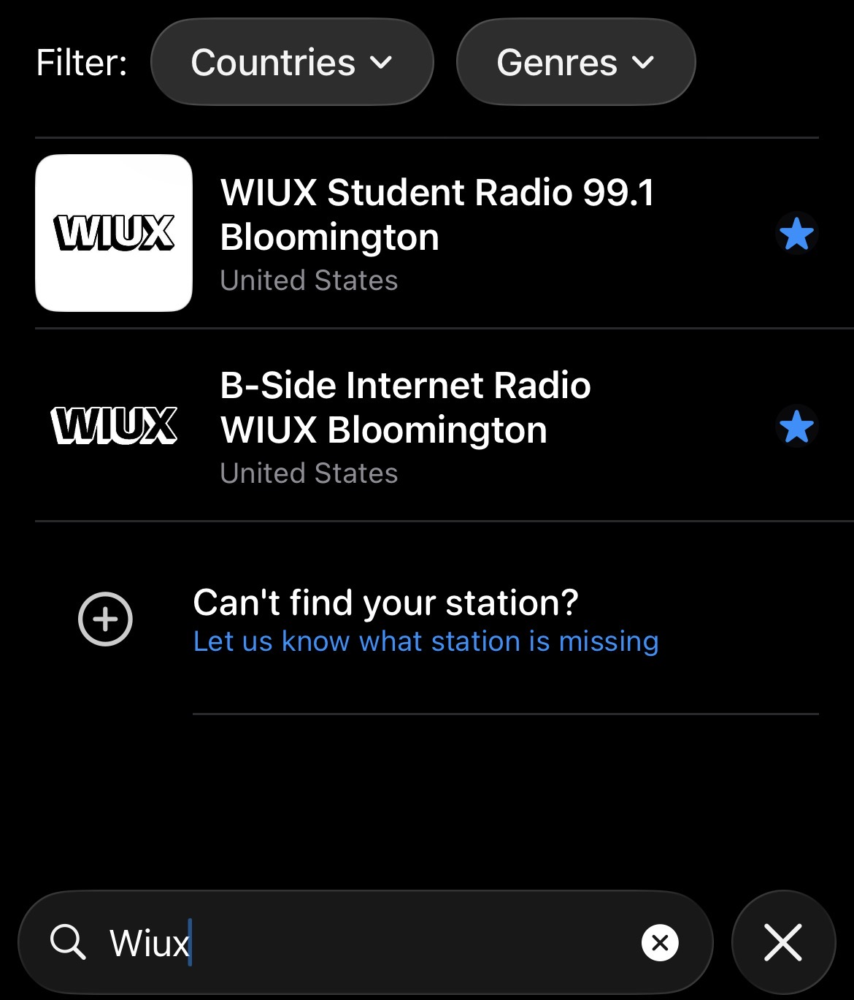

You can listen directly through the WIUX website here.
For more convenience you can also listen through a free radio app. Here's a screenshot of a good one on the App Store. Be aware that sometimes this one will encourage you to pay for a subscription, but if you look closely there should be an X to close that prompt.

Once you have the app you can just search for "WIUX" and select B-Side Internet Radio.
